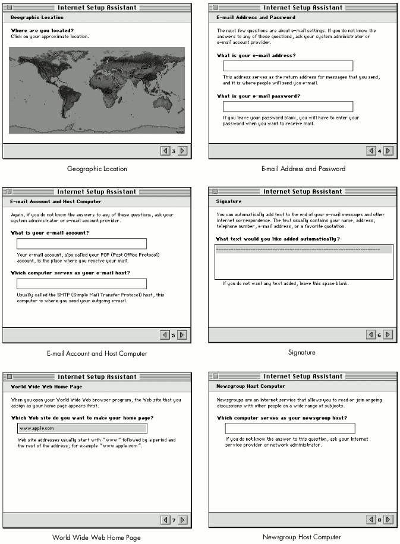

Assistants are a key part of the Mac OS 8 help system. An
assistant makes an application's features easier to use and more
readily accessible. In anticipation of Mac OS 8, this article will
show you how to build Mac OS 8-style assistants into your System
7 applications, from design to implementation. We illustrate this
with a sample assistant developed for the Internet Configuration
System.
Developers are constantly pursuing two goals that seem to be at cross-purposes:
making applications more powerful and making them easier to use. All too often, power
brings complexity, when in fact power can be used to simplify things for the user.
Assistants can make the powerful features you're building into your applications
easier to access and handle.
An assistant offers the user an alternate interface. It focuses on a specific activity that
the average user is likely to want to do and frames the application's functionality to
support that activity. The defining aspect of an assistant is the interview, in which the
user is asked to supply information about preferences and typical activities
accomplished with the application.
Although assistants can be implemented under System 7, they'll be able to do more
using Mac OS 8 technologies. In this article, we talk about what Mac OS 8 assistants
are and give some general guidelines for designing an interview. We also provide an
example of how to implement an interview in System 7. Our sample assistant helps
users with the Internet Configuration System (Internet Config), a utility for setting
preferences for Internet applications. Internet Config is described in detail in the
article "Implementing Shared Internet Preferences With Internet Config" in develop
Issue 23. The source code for the Internet Setup Assistant is included on this issue's
CD.
The final name for assistants, which have also been called experts, has
not been decided at the time of this writing. Whichever the final name, the
interview-based interaction that forms the basis of assistants will be an
integral part of the Mac OS 8 help system.*
An assistant is a small single-purpose application that can do any or all of the
following:
For example, a resume-formatting assistant would ask the user how formal or casual
the resume should be. It would then make assumptions, hiding such details as typeface
selection and paragraph formatting. An assistant for maintaining a computer would use
task scheduling to check for viruses when it makes sense, optimize the hard disk when
it needs to, and so on.
At first glance, assistants might seem to resemble Microsoft's wizards. Currently,
however, there are differences between them. Wizards don't make reasonable
assumptions based on user context and user activity. Instead of filtering out options
that aren't applicable, they present all options. While assistants provide an alternate
interface to an application or set of applications, wizards might be the only user
interface to a task, and they aren't capable of pulling together elements from other
places in the interface. Wizards also can't schedule tasks for later execution.
WHEN TO USE ASSISTANTS
Assistants are meant to augment and not replace the more direct ways to control your
application. They shouldn't be used to cover up a flawed user interface design, such as
dialog boxes or commands that are too difficult to figure out. Users should always be
able to do directly in the program's primary interface whatever an assistant does for
them indirectly, though it might take more steps to accomplish the task in the primary
interface. How do you determine when a specific area of the user interface needs a
redesign and when it could use an assistant? In general, an assistant is most effective
when it supports an activity that many users want to perform with your application
but that can only be accomplished if the user has a better-than-average familiarity
with your application's feature set and user interface. For example, we developed an
assistant for Internet Config because it takes several steps in different places of the
interface to set up your Internet preferences for the first time.
THE INTERVIEW
An assistant conducts a brief interview, consisting of a series of simple questions, to
get the information it needs from the user. The interview should be:
Note that an interview isn't a dialog box, nor is it a dialog box taken apart and
presented in a series of smaller dialog boxes. Adding "Assistant" to the name of a
command that calls up a dialog box doesn't make the dialog box an interview or the
command an assistant. Finally, the interview isn't a way to give the computer a
personality.
THE INTERVIEW WINDOW
The assistant interview takes place in a fixed-size, movable window. Whether it's a
regular (document) window, a modal window, or a floating window depends on the
context from which you anticipate it being invoked. Assistants should be accessible
from appropriate places in your user interface, such as through a menu item or a
button in a dialog box. They should be accessible by name (so that the name of the menu
item or button is the name of the assistant) or, if the context is clear, by the words
"Assist Me." The interview window contains header, content, and navigation areas, as
you can see in Figure 1.
Figure 1. A typical assistant interview window
To demonstrate how to add an assistant to your application, the rest of this article
describes how we designed and implemented an assistant for Internet Config, a popular
shareware utility program.
With Internet Config, the user can create a single file that stores preferences and
settings for all Internet services. As long as an e-mail program, Web browser, or
other Internet application uses the Internet Config preferences file, the user doesn't
have to reenter Internet preferences for each program.
Internet Config's central location for user interaction is the window shown in Figure
2. Clicking each button in the main window brings up a window in which the user
enters information and sets preferences.
Figure 2. Internet Config's main window
Internet Config enables users to store a broad range of preferences, from e-mail
addresses to file conversion formats. Most users never need to set many of these
preferences, but the dedicated Internet habitue probably finds them all useful.
Internet Config risks being overwhelming for the sake of completeness -- a perfect
opportunity for an assistant. Our assistant makes Internet Config easier to use by
helping the user create a preferences file that stores only the preferences that are
most commonly set.
DECIDING WHAT THE ASSISTANT WILL DO
In designing an assistant, you need to determine what most of your users will want to
do. In the case of Internet Config, recent market studies show that most people use the
Internet for e-mail, browsing, and downloading files. Given that information, the
Internet Config assistant's functionality should be limited to setting preferences in
those areas. The power-surfer minority that wants, for example, to change the default
text editor can still do so directly through Internet Config's interface.
Assistants should be made available from wherever they make sense. For the Internet
Setup Assistant, it would be helpful to add an Assist Me button to the main Internet
Config window and an Internet Setup Assistant command to the Help menu. Application
programs that use Internet Config could have a similar button in logical places in their
user interfaces. In addition, the Internet Setup Assistant could be automatically
displayed the first time the user launches Internet Config.
THE INTERNET CONFIG INTERVIEW
Figure 3. The Internet Setup Assistant introduction
The next panel, titled "Personal Information," was shown earlier in Figure 1. This
panel poses two questions that are easy to answer: it asks for the user's name (filling
in a default supplied by the file sharing setup) and company or organization. This
starts the interview off smoothly while still obtaining necessary information.
The remaining interview panels that ask questions are listed below (in the order they
appear) and are shown in Figure 4. Note that for a few of the questions, the assistant
provides some information because the questions might be too difficult for some users
to answer. The goal is to keep the interview self-contained, so that the user doesn't
need to go to Apple Guide or a manual to figure out what to do.

Figure 4. Internet Setup Assistant interview questions
When a user types an answer that's clearly wrong (such as an e-mail address that
doesn't include the @ character), we recommend that you integrate the error trapping
into the flow of the interview questions, rather than presenting an alert box. For
example, when the user clicks the right arrow button and there are invalid values in
the current panel, the next panel should point out the error and restate the question.
The goal is to preserve the question-and-answer, conversational characteristics of the
interview.
Finally, when the assistant has asked all the questions, it presents the conclusion panel
(Figure 5). The user can see more details by clicking the Show Details button (which
then changes to Hide Details); the assistant shows the information it will use in
creating the Internet preferences file (name, organization, e-mail address, and so
on), summarizing the user's interview responses.
Figure 5. The Internet Setup Assistant conclusion
That's it: ten questions in seven panels, plus an introduction and a conclusion.
You can use your favorite application framework to develop an assistant, or write it
from scratch as a small application. On this issue's CD, we provide sample code for
developing an assistant. We don't recommend using Apple Guide to conduct the
interviews. Assistants and Apple Guide are different components of the help system;
they should look related but still different from each other. Also, Apple Guide is a
less-than-efficient tool for implementing assistant interviews. The programming
techniques used in this example are specific to System 7 but will continue to work
under Mac OS 8. As long as you avoid using undocumented features or directly accessing
data structures that have an accessor routine, your code should work fine under Mac
OS 8. In addition, if you insulate your code from specifics of the Macintosh Toolbox, it
will be easier to add Mac OS 8 features later on. For some details about Mac OS 8
compatibility, see the article "Planning for Mac OS 8 Compatibility" in develop Issue
26.
Our assistant is based on a simple framework that provides a lightweight
object-oriented coating on top of the Macinosh Toolbox. For example, we have classes
that provide an object-oriented layer on top of Point (CPoint), Rect (CRect),
WindowPtr (CWindow), DialogPtr (CDialog), and so on. We also have a simple
application shell, TApplication. Those files are grouped in the framework folder.
The classes aren't dependent on each other, so you can use them easily in your existing
application. You can create an assistant dialog by using an object of a TAssistant
subclass and sending it the appropriate events. Your usual framework can still be used
for handling your event loop and your application's windows. To implement the
appearance of assistants using your own framework, check out the TAssistant class to
see how we've done it.
The interview is presented in a dialog by a TAssistant object. The class TAssistant is a
subclass of CMultiDialog, which allows you to have subdialogs that can be switched in
and out as needed. You could use a similar technique to switch among multiple panels in
a preferences dialog. Our implementation uses the ShortenDITL and AppendDITL
routines, as shown in Listing 1. For another way to change panels, see the article
"Multipane Dialogs" in develop Issue 23.
______________________________
Listing 1. Changing panels in the assistant's interview
void CMultiDialog::SetSubDialog(SInt16 subDialogID)
{
if (GetWindowRef() == NULL)
CreateWindow();
if (GetSubDialog() != subDialogID) {
// Save parameters in current panel.
for (int i = 0; i < kDialogParametersCount; i++) {
if (fParameters[i].dialogItem != 0)
GetItemText(fParameters[i].dialogItem,
fParameters[i].value);
}
// Remove items from current dialog.
if (fSubDialogID > 0)
ShortenDITL(GetDialogRef(),
CountDITL(GetDialogRef()) - fCommonItems);
fSubDialogID = subDialogID;
{
// Add new dialog items to the dialog.
Handle items = GetResource('DITL', GetSubDialog());
assert(items != NULL);
AppendDITL(GetDialogRef(), items, overlayDITL);
ReleaseResource(items);
}
// Prepare the items in the dialog.
DoPrepareDialog();
}
}
______________________________
When dialogs are displayed in assistants, you often need to capture the information the
user enters so that you can put it back if the user goes back to that panel. You need to
be able to do this until the user clicks the Go Ahead button in the last panel. To simplify
this task, we substitute a key string, which is stored in the DITL of the dialog, for a
string that can change dynamically. The substitution is done each time the dialog is
displayed. Listing 2 shows how to substitute parameters in the dialog by replacing any
instance of a key that appears in a static or editable text dialog item with a
corresponding value. In addition, if an editable text item contains only a key, the value
entered in the dialog will be associated with the key. This is an extended version of the
^0 parameter substitution done by the Dialog Manager.
______________________________
Listing 2. Substituting parameter values in dialogs
void CDialog::SubstituteParameters(void)
{
LazyHandle substitutionText, itemText;
// Reset the association between parameters and dialog items.
for (int i = 0; i < kDialogParametersCount; i++)
fParameters[i].dialogItem = 0;
// Loop through all dialog items.
for (int item = 1, itemCount = CountDITL(GetDialogRef());
item <= itemCount; item++) {
SInt16 itemType = GetItemType(item);
// If it's a static or editable text item...
if (itemType == kEditTextDialogItem ||
itemType == kStaticTextDialogItem) {
Boolean itemTextChanged = false;
// Copy the text to a handle.
Str255 itemTextString;
GetItemText(item, itemTextString);
itemText.Set(&itemTextString[1], itemTextString[0]);
// Loop through the parameters.
for (int j = 0; j < kDialogParametersCount; j++) {
// If the parameter is used as a nonempty key...
if (fParameters[j].key[0] != 0) {
if (itemType == kEditTextDialogItem &&
::IdenticalString (itemTextString,
fParameters[j].key, NULL) == 0) {
// If the edit field contains only the key,
// associate the item index with the parameter. The
// parameter value is updated when the text
// changes.
fParameters[j].dialogItem = item;
}
{
// Replace the key with the parameter value, using
// the Script Manager.
substitutionText.Set(&fParameters[j].value[1],
fParameters[j].value[0]);
if (::ReplaceText(itemText, substitutionText,
fParameters[j].key) > 0)
itemTextChanged = true;
}
}
}
if (itemTextChanged) {
// The item text has changed. Put the modified text back
// in the dialog item.
Str255 s;
s[0] = itemText.GetSize();
BlockMoveData(*itemText, &s[1], s[0]);
SetItemText(item, s);
}
}
}
}
______________________________
When the assistant starts up, we try to capture as much information as possible about
the user's environment. For example, we use Internet Config information that the user
has previously entered.
When the user has entered all the information we ask for and clicked the Go Ahead
button, we again use Internet Config, this time to set the user's preferences. The
CInternetConfig class provides a C++ wrapper to the Internet Config API. See the
details in the source code.
As you can see, the Internet Setup Assistant doesn't try to do everything for all users.
Instead, it helps complete tasks in a way that a majority of users will find useful and
valuable.
This sample assistant, though a relatively unambitious demonstration, should start
you thinking about how to design and develop assistants for your own applications.
Nothing is quite as powerful as simplicity.
RELATED READING
JOSE ARCELLANA (arcellan@apple.com) is a human interface designer working on
Mac OS 8 assistants, Apple Guide, and related technologies. He lives a rich analog life
with his wife, their four-year-old child, and a yellow Labrador retriever in an
86-year-old Craftsman bungalow in Oakland. The house has lots of books, four
guitars, and no television.*
ARNO GOURDOL (arno@apple.com) has been spotted on top of various San Francisco
Bay Area chthonic protrusions with a merry group of Moof hikers in a futile attempt
to cure his acrophobia. He has recently been engrossed by the Epic of Gilgamesh and
would love to find someone with a good copy of the twelve tablets. In his spare time,
Arno is the technical lead of the Mac OS 8 assistance and related technologies team.*
Thanks to our technical reviewers Deeje Cooley, Winston Hendrickson, Rick Mann,
Jim Palmer, and Jim Rodden.*